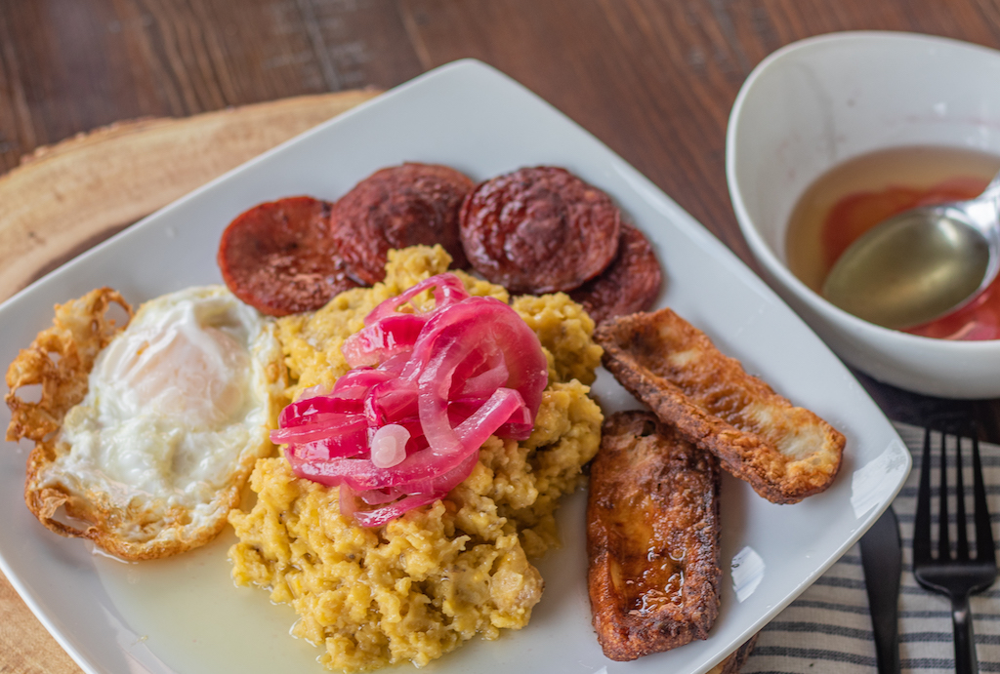

Mangu de platano verde Dominicano

El mangú, o plátano majado dominicano, es uno de los platos más queridos de los dominicanos, base de "Los Tres Golpes", el desayuno más completo y complejo de nuestra gastronomía. Y si te pretuntas cómo hacer mangú que deleite a todo dominicano, aquí te dejo mis secretos.
Ingredientes
- 2 plátanos verdes
- 1½ cucharadita sal
- 4 cucharadas mantequilla , o aceite de oliva (ver notas)
- 1 cebolla roja, grande
- 2 cucharada aceite de oliva
- 1 cucharadita vinagre de frutas
- ½ cucharadita sal, (o más, al gusto)
Preparacion
- Pela los plátanos. Corta en octavos (dos mitades, luego las mitades en cuartos).
Remueve la parte central del plátano donde están las semillas (esto es opcional y como lo hago).
/li>
- Hierve los plátanos en agua, a la que has agregado la sal, hasta que estén muy blandos. Retira del fuego.
- Maja los plátanos recién sacados del agua con un tenedor (cuidado de no quemarte).
Mezclar con la mantequilla, y añade progresivamente una taza de agua a temperatura ambiente y sigue machacando y mezclando hasta que se convierta en un puré muy suave y sin grumos.
- Corta la cebolla en tiras o ruedas finas. Calienta el aceite en una sartén a fuego bajo.
Cuece removiendo hasta que la cebolla se tornen translúcida. Agrega vinagre y sazona con sal al gusto.
- Servir
Vuelva al inicio